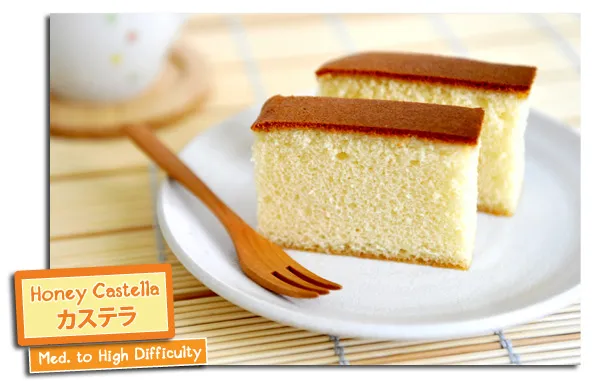

CASTELLA.ART  : Creating a
scientific framework for attaining nibbāna in this life. [Mobile App coming
up soon.]
: Creating a
scientific framework for attaining nibbāna in this life. [Mobile App coming
up soon.]
: Creating a
scientific framework for attaining nibbāna in this life. [Mobile App coming
up soon.]
CASTELLA (カステ) is a delicious abbreviation for
Category-theoretical Approach into Śūnyatā via the Topological induction of Equanimity & Liberation Lattice unto nibbāna
CASTELLA's aim is to lay the mathematical foundation to help you in your spiritual journey towards the deathless element, which is referred to as nibbāna (or nirvāṇa) in the Buddhist tradition.

"May I attain nibbāna in this life, and so I can put a full completion (圓滿; परिपूर्ण) into this app, and so may it bring loveliness into your life the same way the Japanese cake
{> As of 2024, The CASTELLA Mobile App is still in active development. Meanwhile, you can get yourself familiar with the Heart Sūtra. }